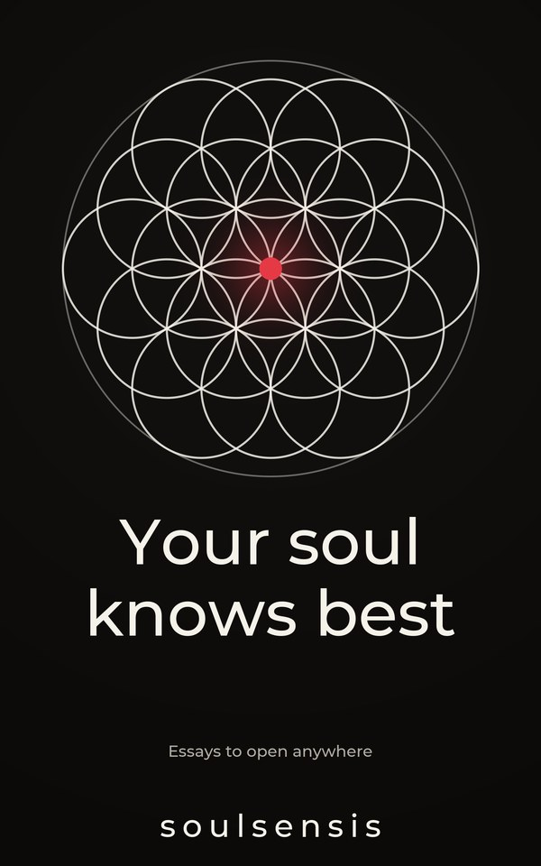

Sit still enough to hear it.
Honest essays from one person still working it out. For anyone who feels stuck, rushed or half alive.
New here?
Start here: 3 essays
There's a state a lot of people live in without ever naming it. You're not really living, but you're not dying either. You're half alive and half dead.
Read + watch · 2 min 2Where are you rushing to?Everyone feels rushed, but no one is asking: where are you rushing to? I think one of the most important things in life is to be able to slow down. Our…
Read + watch · 3 min 3Gratitude is underratedGratitude is underrated as fuck. Perhaps modern society has rendered it “wishy-washy”, a bit cringe, but on application to your life, you notice insane…
Read · 3 minLatest essay · 5 November 2026
Listen to your soul
Do you realise that your inner state strongly dictates your external environment? Why do some people who are brought up with nothing achieve millions?…

What readers have said
“This actually got to me this morning… thank you.”
“It is so beautifully written, and hits deep to the core. Exactly what I needed to hear.”
“Your words really… gave me a great sense of relief. Very soothing.”
“Very wholesome post to wake up to at the top of my feed. Thank you sir, well written and very encouraging.”
“This resonated with me as i have experienced this several times and I now welcome moments like this in my life and indeed somewhat chase them now.”
“…I’m glad there are people like you in this world to encourage me to look ahead and keep moving forward.”

Your question
What's in the way for you right now?
Leave it here. I read every one.